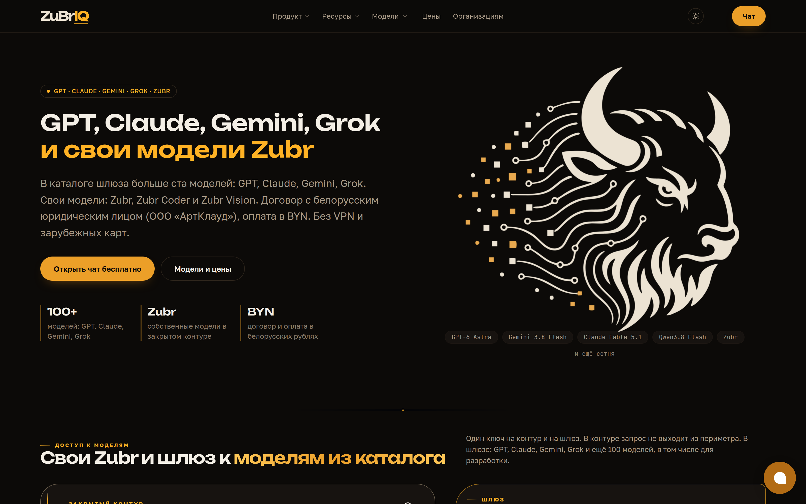
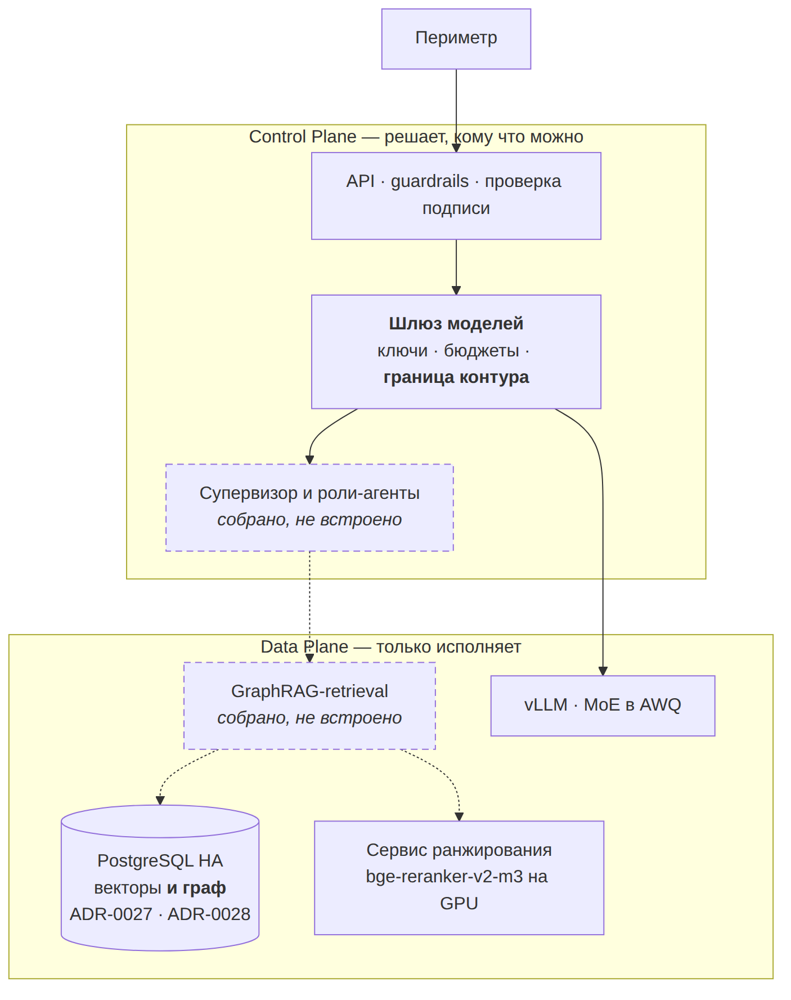
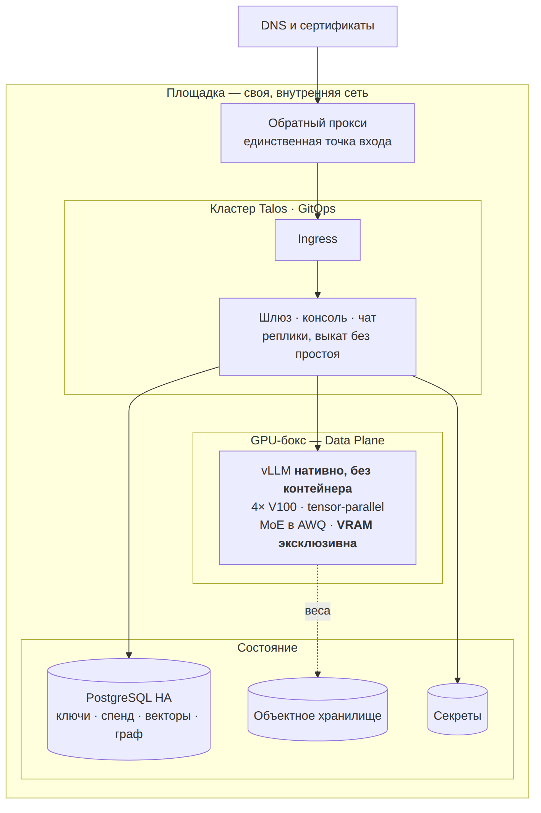
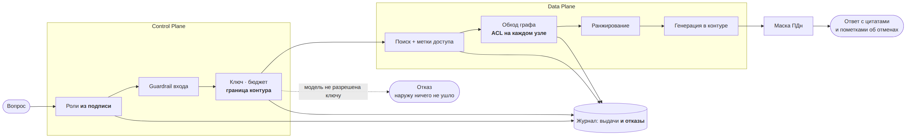
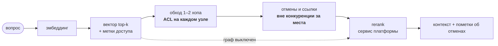
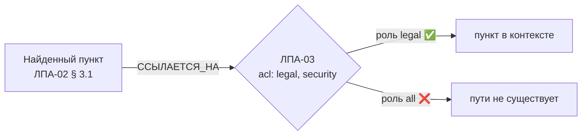
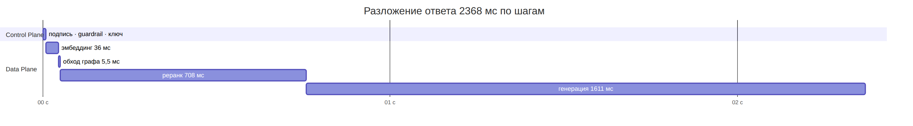

Это работающая система
Предмет проекта — закрытый контур платформы, которая обслуживает клиентов, считает потребление и выставляет счета.


Выпускной проект · OTUS AI Architect · сентябрь 2026
Защищённая платформа анализа корпоративных знаний с графовыми подходами. Закрытый контур работающей платформы: свои модели, свой инференс, нулевой egress.
Александр Зубик · AI Architect · ООО «АртКлауд»
Запись реального прогона: сервис поднимается, дожидается готовности и дальше отвечает через свой API. Офлайн-режим — GPU не нужен, граф и права работают полностью.
Граф связей · контрольный замер с выключенным графом · критерий «пользователь B» на двух ролях · SSE-поток · штат агентов · OpenAI-совместимость · прогон тестов.
Граф в браузере Neo4j, трейс в Jaeger и дашборд — их видно только на живом стенде, эти кадры снимаются с экрана.
Четыре блокирующих пункта и два желательных. Каждый подтверждён тестом или замером, а не декларацией.
| Критерий | Статус | Чем закрыт |
|---|---|---|
| Облачные API не используются | ✓ | граница контура правами ключа, проверка до вызова вендора |
| Диаграммы Deployment и Data Flow | ✓ | обе, плюс Sequence и ER |
| Реализация GraphRAG | ✓ | граф + контрольный замер без графа + прогон на боевом корпусе |
| «Пользователь B» не получает закрытый документ | ✓ | проверяется контекст модели, а не текст ответа |
| Control Plane / Data Plane | ✓ | в диаграммах и в коде |
| State machine, а не линейные скрипты | ✓ | цикл, ветвление, лимиты, checkpointer |
| Streaming · тесты на промпты | ✓ | SSE · golden set с гейтами в CI |
| Видео-демо 5–7 минут | частично | терминальная часть записана, браузерные кадры не сняты |
| Мультимодальный ingestion | нет | спроектирован каскадом из трёх ступеней, конвейера нет |
Пунктиром на схемах — то, что собрано и покрыто тестами, но в платформу пока не встроено. Схема, выдающая желаемое за действительное, хуже отсутствующей.



Вопрос: «Сколько дней основной ежегодный отпуск?» Вектор находит норму, которая уже отменена.
ЛПА-01 § 1: «28 календарных дней». Ответ формально найден в базе — и неверен.
ЛПА-04 § 1: «с 1 апреля — 30 дней, пункт 1 ЛПА-01 отменяется». Отменяющий документ текстуально похож на десятки других, гарантии попадания в выдачу нет.

Доказательство, а не демонстрация. Обычно показывают, что с графом хорошо. Контрольный замер показывает ещё и что без него плохо: граф выключается переменной окружения, остальной путь не меняется — пометка об отмене исчезает, а ответ выглядит так же уверенно.
статьи в 25 кодексах
рёбер «ссылается на статью»
обход на 1–2 хопа
рёбер отмены — и это свойство источника, а не реализации
Корпус кодексов — консолидированная действующая редакция: отменённый пункт заменён маркером, указывать ребру не на что. Отмены остаются на корпусе, где обе редакции лежат рядом.
Предикат стоит на каждом узле обхода, а не на финальной выдаче: иначе закрытый документ утекает через структуру — факт существования, название, соседей.

| Проверка | Значение |
|---|---|
| Нарушений ACL на golden set | 0 |
| Тест проходит на обоих путях — одиночном и агентном | ✓ |
| Мандат роли-агента ⊆ прав пользователя | ✓ |
| Роли берутся из подписи токена, а не из тела запроса | ✓ |
Три узких места нашлись в разложении по спанам, а не в рассуждении о том, где может быть медленно.

| Что измерено | До | После | Что изменилось |
|---|---|---|---|
| Ранжирование отдано сервису платформы | 1,79 RPS | 11,03 RPS | на 8 клиентах; +36 % → +107 % прироста |
| Обход графа на боевом корпусе | 492 мс | 6,4 мс | ссылка разрешается на сборке, а не в рекурсии |
| Эмбеддер на GPU, p90 | 158,6 мс | 60,8 мс | исчез хвост, а не медиана |
Шесть решений, опровергнутых собственными замерами и оставленных как есть. Это не приложение к работе — это её содержание.
Маршрутизация 13/13, прирост recall — нет, цена ×3,7 латентности. Оправдан требованием ТЗ и разделением прав, но не качеством ответов.
ADR о выборе векторной базы ушёл в superseded: предметом решения оказался
конвейер ранжирования. На графе повторилось — три критерия из четырёх не разделили.
У слабого эмбеддера зазор между своими и чужими вопросами отрицательный (−0,09): порога нет ни при каком значении. Видно только на примерах, похожих на корпус.
Три редакции расчёта оперировали утилизацией 5–100 %. Замер за 30 дней — 0,9 %. Порог окупаемости 31 % посчитан верно и бесполезен: факт ниже в 34 раза.
19 чанков — обход 2,4 мс. Боевой корпус — 492 мс при бюджете ответа 177 мс. Ошибка была не в выборе конструкции, а в объёме, на котором её проверяли.
Сверка с источником написана правильно и покрывает 10 % документов; 29 % не сверятся никогда — у них нет адреса источника. По коду этого не видно.
Архитектура, не подтверждённая замером, — это гипотеза.
И следом: скепсис без замера — такая же гипотеза, только с обратным знаком. Изнутри обе ощущаются одинаково убедительно.
Предмет проекта — закрытый контур платформы, которая обслуживает клиентов, считает потребление и выставляет счета.

Всё, на что опираются цифры выше.